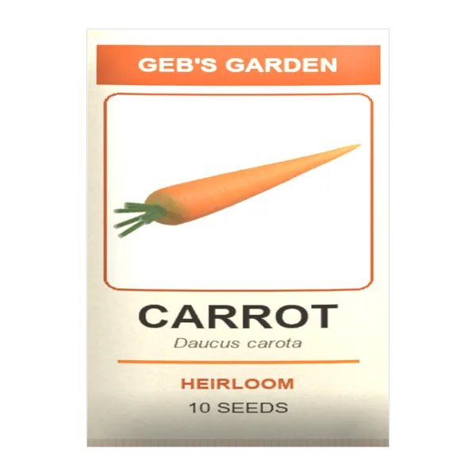
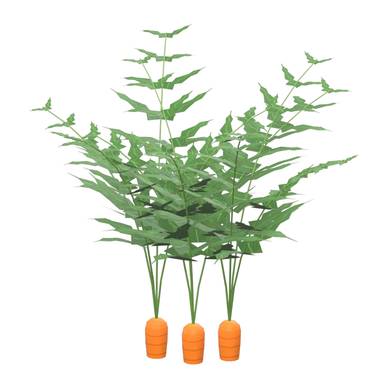
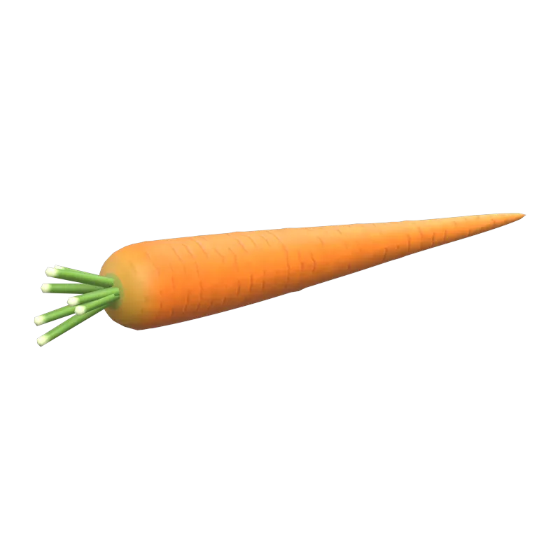

A DayZ mod by Geb
Flora & Fauna.
The wild side of DayZ. Hunt 15 new animals, forage 44 wild mushrooms, and grow 10 garden crops.


Wildlife
From rabbits to elephants.
Every animal has its own model and its own harvest: meat, hides, fat, a raccoon's tail or an elephant's tusks. You choose which ones live on your map.
Mycology
Forty-four fungi.
Know which is which.
24 are good to eat. 20 are look-alikes that will make you sick, and 6 of those can kill. Each one cooks, dries, burns and rots with its own look.
Edible. Safe raw or cooked.
Cook first. Upsets the stomach raw.
Poisonous. Food poisoning; charcoal tablets help.
Deadly. Organ damage that cooking doesn't stop. Only chelation tablets save you.
Gardening
Grow your own.
Ten crops, each from its own seed packet, through five growth stages in a garden plot. Eat the harvest raw, bake it, boil it, or dry it for later.

Open a packet.Each crop comes in a Geb's Garden seed packet, found as loot.
Plant and water.Sow in a tilled garden plot, just like vanilla seeds.
Harvest.Pick it when ripe, before it dries out or spoils.
For server owners
Set up in minutes.
Nothing replaces vanilla. Animals spawn through Central Economy events; mushrooms and seed packets are ordinary loot. Add only what you want.
-
1
Install the mod
Subscribe on the Workshop, place
@gebsflorafaunabeside the server executable, copy its key intokeys/, and load-mod=@gebsflorafaunaon the server. Every player needs the mod too. -
2
Add an animal event
Animals don't go in
types.xml. Copy one of your map's vanilla animal events indb/events.xml, give it a new name, and swap in ageb_animal. Start with one species and tune the numbers.<event name="AnimalGebRacoon"> <nominal>8</nominal> <min>4</min> <max>12</max> <lifetime>180</lifetime> <restock>0</restock> <saferadius>200</saferadius> <distanceradius>50</distanceradius> <cleanupradius>200</cleanupradius> <flags deletable="0" init_random="0" remove_damaged="1"/> <position>fixed</position> <limit>child</limit> <active>1</active> <children> <child lootmax="0" lootmin="0" max="4" min="1" type="geb_Racoon"/> </children> </event> -
3
Give it territory
In
cfgeventspawns.xml, add a matching block inside<eventposdef>. Each<pos>is a possible territory centre; use safe spots from your own map.<event name="AnimalGebRacoon"> <zone smin="0" smax="0" dmin="40" dmax="80" r="100"/> <!-- Replace these with coordinates for your map. --> <pos x="7500.0" z="7500.0" a="0.0"/> <pos x="8000.0" z="7200.0" a="0.0"/> </event> -
4
Let mushrooms grow
Give each fungus a
types.xmlentry like vanilla'sAgaricusMushroom, then add it to the vanillaTrajectoryevents that scatter mushrooms on the forest floor around players. Leave out the poisonous ones if you'd rather.<type name="geb_Chanterelle"> <nominal>0</nominal> <lifetime>900</lifetime> <restock>0</restock> <min>0</min> <quantmin>-1</quantmin> <quantmax>-1</quantmax> <cost>100</cost> <flags count_in_cargo="0" count_in_hoarder="0" count_in_map="1" count_in_player="0" crafted="1" deloot="0"/> <category name="food"/> </type> -
5
Stock the seed packets
Seed packets are loot, like vanilla's
TomatoSeedsPack. Copy itstypes.xmlentry once for each packet below and change the name. -
6
Test it
Stop the server before editing and keep backups. Validate the XML, restart, and read the RPT and script logs. Add species one at a time: too many animal events can crowd out vanilla wildlife. Values that suit Chernarus may not suit Sakhal, Livonia or a custom map.
Reference
Every classname.
All 123 public classes, for spawning, trader lists and loot tables. Click a name to copy it.
| Classname | Name | Category |
|---|
Help
Questions.
Does this replace vanilla animals?
No. Custom events sit alongside vanilla wildlife, and your mission files decide which ones are active.
I can spawn an animal by hand, but none appear naturally. Why?
A working classname proves the mod is loaded. Natural populations also need matching entries in events.xml and cfgeventspawns.xml.
Vanilla animals stopped spawning. What happened?
Check the server log for malformed XML, then look at the combined nominal, min and max of every animal event. Start with one custom event and add more gradually.
Which mushrooms are dangerous?
Most of the poisonous ones cause food poisoning: vomiting, eased by charcoal tablets. The deadly ones damage the organs, and cooking doesn't help; only chelation tablets stop it. Several edible species, such as morels, must be cooked first. The Mushrooms section above marks every one.
How do the garden crops grow?
Empty a Geb's Garden seed packet, plant the seeds in a tilled garden plot and water them, as with vanilla seeds. Each crop grows through five stages; harvest it when ripe, before it dries or spoils. Cut fresh seeds out of a raw harvest with any blade (garlic splits into cloves; carrots come from packets only). A whole watermelon or cantaloupe is too big to eat: prepare it with a blade for slices and seeds, as with vanilla's pumpkin.
Does every player need the mod?
Yes. It supplies the models, textures, sounds, scripts and item names.
Can I put it in a server pack?
No. Use the Workshop item, and a Steam Collection for your server's required mods.